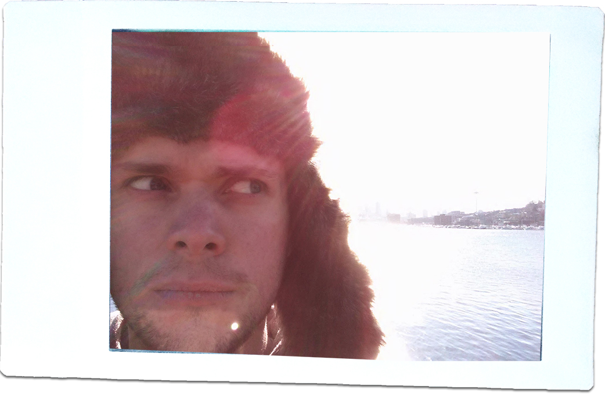

<div class="home">

<!-- 
    <div id="container">
        <div id="left">
            
            <p><small><a href="http://zherring.dribbble.com/">Dribbble</a> | <a href="https://www.medium.com/my-portfolio">Medium</a> | <a href="https://www.github.com/zherring">Github</a> | <a href="https://www.codepen.io/zherring">Codepen</a> | <a href="https://www.twitter.com/zherring">Twitter</a> | <a href="https://www.linkedin.com/in/zherring">LinkedIn</a></small></p>
        </div>

        <div id="right">
            <h1>Zach Herring loves solving difficult problems</h1>
            <h2>He does that all day long as a Product & UX Designer</h2>
            <h3>He can hardly believe how #blessed he is</h3>
            <p>Zach specializes in creating flexible enterprise and pro-sumer software design solutions. He's got a lot of practice at testing, organizing and implementing large-scale design pattern frameworks, and loves figuring out product-market fit. Designing an OS is on his bucket list.</p>
            <p>He'll <span class="cross">hopefully</span> eventually finish his portfolio.</p>
            <p>Until then, check out his <a href="https://www.medium.com/my-portfolio" target="_blank">Medium</a> for a short series of case studies, and  <a href="https://www.dribbble.com/zherring" target="_blank">Dribbble</a> for a semi-steady stream of polished work.</p>
        </div>
    </div>
 -->


  <h1 class="page-heading">Posts</h1>

  <ul class="post-list">
    {% for post in site.posts %}
      <li>
        <span class="post-meta">{{ post.date | date: "%b %-d, %Y" }}</span>

        <h2>
          <a class="post-link" href="{{ post.url | prepend: site.baseurl }}">{{ post.title }}</a>
        </h2>
      </li>
    {% endfor %}
  </ul>

  <p class="rss-subscribe">subscribe <a href="{{ "/feed.xml" | prepend: site.baseurl }}">via RSS</a></p>

</div>
